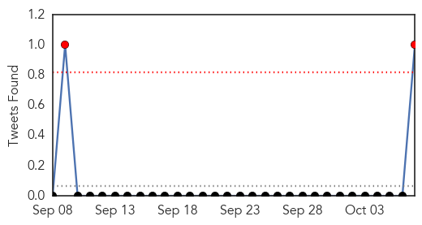
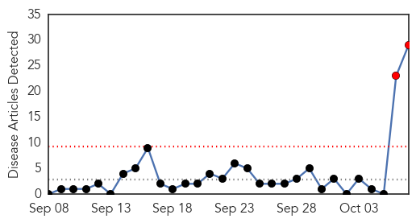
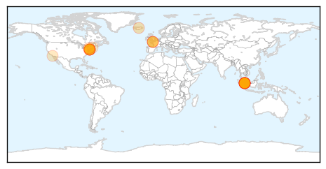

Swine Flu
30-Day Web Trend
2 alerts, 0 warnings

30-Day Twitter Trend
2 alerts, 0 warnings

Article Locations

Article Confidences
Top Articles:
- 0.999
- After dengue, swine flu likely to hit Delhi, govt preps up
- 0.993
- This week in wellness: Preventing the flu
- 0.989
- A nip in the air, so guard against swine flu
- 0.986
- 10 swine flu cases reported in Rajasthan
- 0.984
- Swine flu case found positive in City, Health Department on alert
- 0.982
- 10 swine flu cases reported in Rajasthan
- 0.963
- Have asked govt. hospitals to be prepared to fight swine flu, says Satyendra Jain
- 0.942
- Delhi Health Minister holds meeting to review Swine Flu preparedness
- 0.893
- Scientists call for urgent trials to judge flu drugs for pandemics
Top Tweets:
- 0.628
- Hey the study shows pretty good flu shot protection against H1N1 & flu B. Not perfect is better than nothing!
Hepatitis
30-Day Web Trend
2 alerts, 0 warnings

30-Day Twitter Trend
0 alerts, 0 warnings

Article Locations
Article Confidences
Top Articles:
- 0.981
- Hepatitis C outbreak in Singapore general hospital, 22 infected, 4 dead
- 0.980
- SGH stops using multi-dose vials after outbreak, news, Health News, AsiaOne YourHealth
- 0.980
- Nurse reused syringes during flu vaccine clinic, N.J. health authorities say
- 0.961
- Public not told earlier ‘as there were no signs of acute hepatitis C cases’
- 0.922
- Hope for Hepatitis C Patients
- 0.910
- Four die as Singapore hospital suffers wave of hepatitis C infections
- 0.893
- 4 renal patients die in hospital from hepatitis C
- 0.885
- SGH admits fault
- 0.877
- NJ pharma corp employees tested for HIV, hepatitis after nurse reused syringe for flu shots — RT USA
- 0.827
- 70 at risk of infection in New Jersey after nurse reused flu shot syringes
- 0.824
- Nearly 70 patients tested for HIV and hepatitis after nurse reuses syringe giving flu jabs
- 0.804
- Nurse used same syringe on 67 people at N.J. flu clinic, state says
- 0.778
- New Jersey nurse caught reusing flu shot syringes
- 0.777
- 21 patients at SGH hit by hepatitis C; MOH orders probe, news, Health News, AsiaOne YourHealth
- 0.774
- Not yet conclusive that multi-dosing is cause of Hepatitis C cluster: MOH
- 0.750
- Mystery Of Virus Spread Confounds Medical Experts
- 0.722
- New Jersey nurse caught reusing flu shot syringes
- 0.714
- HBV common in pregnant Haitians, vaccination at birth suggested
- 0.702
- Employees being tested for hepatitis, HIV after receiving unsafe flu shots
- 0.673
- Singapore Health Ministry sets up independent committee to investigate infections of Hepatitis C - Xinhua
- 0.629
- ‘High anxiety,’ Nurse reusing syringe leads to 70 patients tested for HIV and hepatitis
- 0.618
- NJ nurse reuses syringe for nearly 70 flu shots – Metro
- 0.617
- New Jersey health officials say nurse reused syringes while giving flu shots; testing urged
- 0.614
- Otsuka : New Jersey agency: Nurse giving flu shots reused syringes
- 0.575
- Endoscopic Procedures are More Dangerous than Previously Thought
- 0.575
- New Jersey agency: Nurse giving flu shots reused syringes - MyNorthwest
- 0.564
- Workers' Party seeks clarification from MOH after Hepatitis C cluster at SGH
- 0.529
- Doctors in Shock Over News of Hepatitis C Outbreak at SGH
- 0.502
- Almost 70 patients tested for HIV and hepatitis after nurse is caught reusing syringe while giving flu shots at New Jersey clinic
Top Tweets:
-
No tweets found for Oct 07, 2015